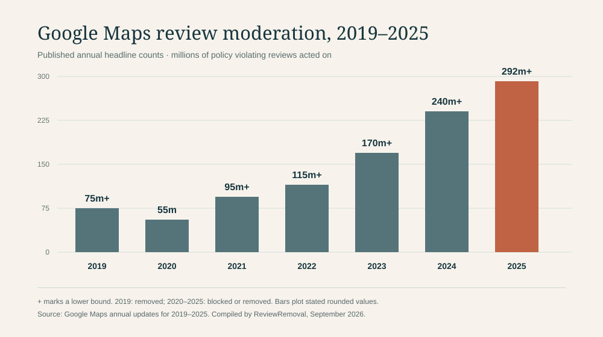
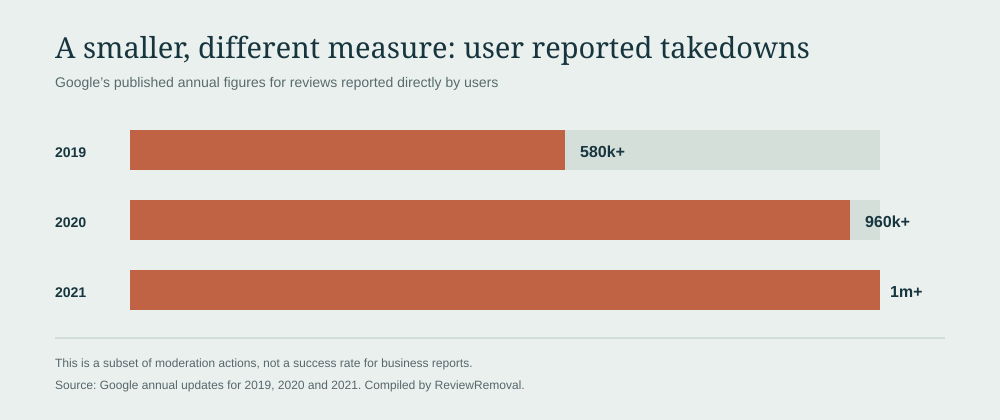

Google’s published annual figure for policy-violating Maps reviews rose from more than 75 million in 2019 to over 292 million in 2025. Those figures describe reviews Google blocked or removed, and the earlier 2019 update uses “removed” alone. They are not a count of successful business-owner complaints. Google’s 2019 update · Google’s 2025 update
We collected the number stated in each of seven annual Google updates, kept Google’s original qualifier (“over,” “more than,” or a rounded number), and plotted those published values below. The result is a compact reference for anyone writing about review moderation. It also shows why a familiar claim—“292 million reviews were deleted after businesses complained”—would be wrong.
Key findings
- The published threshold climbed from 75 million-plus for 2019 to 292 million-plus for 2025. Because most values are lower bounds, dividing them does not produce an exact growth rate. 2019 source · 2025 source
- Google’s 2020 figure was 55 million, below its 2019 figure. Google said the decline occurred alongside lower review volume during COVID-19. 2020 source
- Google separately reported reviews taken down after direct user reports for 2019, 2020 and 2021. That narrower measure is different from its total moderation figure. 2019 source · 2020 source · 2021 source
- Google said it published more than 1 billion helpful reviews in 2025, but that figure cannot be used as a clean denominator for the 292 million blocked-or-removed number. Blocked reviews may never have gone live, and both values are rounded lower bounds. 2025 source
The seven-year series
The chart uses the number in each Google announcement. A “+” means the source said “over” or “more than”; it is not an estimate of the undisclosed exact total. In 2019 Google described reviews removed; later updates use blocked or removed. We preserve that distinction in the table.


| Year | Published figure | Google’s measure | Source |
|---|---|---|---|
| 2019 | More than 75m | Removed | Google update |
| 2020 | 55m | Blocked or removed | Google update |
| 2021 | More than 95m | Blocked or removed | Google update |
| 2022 | Over 115m | Blocked or removed | Google update |
| 2023 | Over 170m | Blocked or removed | Google update |
| 2024 | More than 240m | Blocked or removed | Google update |
| 2025 | Over 292m | Blocked or removed | Google update |
What about reviews reported by users?
Google also published a narrower count of reviews it took down after people reported them directly: more than 580,000 in 2019, more than 960,000 in 2020 and more than 1 million in 2021. These are review takedowns associated with direct reports, not the number of reports filed, and Google did not provide a directly matching figure in every later update in our seven-source set. 2019 update · 2020 update · 2021 update


For a business owner, the distinction matters. The 2025 total includes content stopped before publication and content removed later by Google’s systems or analysts. It cannot tell you the chance that your own report will result in a takedown. Google’s current Business Profile reporting guidance says reviews must violate its policies to qualify for removal and that evaluation typically takes several days.
What the figures do—and do not—show
The series documents what Google said it acted on each year. It does not independently measure how many fake reviews were attempted, how many were visible to users, or how many legitimate reviews were removed by mistake. A higher enforcement number could reflect more attempted abuse, more contributions, better detection, policy changes, or several factors together. Google’s 2024 update, for example, specifically discussed improved algorithms and revisiting older reviews. Google’s 2024 update
Do not turn this into a removal rate
The 2025 figures “over 292 million blocked or removed” and “more than 1 billion published” use different populations and both are lower bounds. Dividing 292 by 1,000 would create a percentage Google did not report and these data do not support.
Another limit: “blocked or removed” combines two very different moments. A blocked review may never appear on a listing; a removed review was visible before a later action. Google does not split those two outcomes in the annual headline figures used here. That is why the chart is best cited as a published moderation series, not a deletion series.
Methods and limitations
- We used seven Google-authored public updates describing the calendar years 2019 through 2025. We recorded the review figure and wording in each source; all links are in the table and source list below.
- We converted the stated counts to millions for one chart. “Over” and “more than” remain lower bounds, shown with a plus sign. The 2020 figure and all large totals are rounded by Google.
- We did not scrape reviews, query private dashboards, survey businesses, or verify Google’s internal counts. This is original compilation and analysis of platform-published data, not a new measurement of all reviews.
- We did not calculate year-over-year percentages because the values are rounded lower bounds and the 2019 measure is worded differently. Changes in enforcement methods or definitions could affect comparability.
Accessed: September 21, 2026. Reuse: You may cite this compilation and download the CSV or SVG with attribution to ReviewRemoval and a link to this article. The original figures remain attributed to Google.
Suggested citation
ReviewRemoval (2026), “Google Maps review moderation, 2019–2025: seven years of published figures,” September 21, 2026. Link to this page and identify Google as the source of the underlying annual counts.
Primary sources
- Google Maps 101: how contributed content makes a more helpful map — 2019 figures.
- A look at how we tackle fake and fraudulent contributed content — 2020 figures.
- How we kept information on Maps reliable in 2021 — 2021 figures.
- New ways we tackle fake contributions on Google Maps — 2022 figures.
- How machine learning keeps contributed content helpful — 2023 figures.
- New ways AI helps keep business information trustworthy — 2024 figures.
- New ways we’re protecting businesses on Maps — 2025 figures.
- Google Business Profile Help: report inappropriate reviews — current reporting guidance.
Need help with a specific review?
Send the platform and the review link. We’ll assess the details and explain the price before paid work begins.
Request Google review help